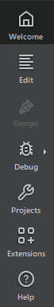

Switch between modes
Modes let you quickly switch between tasks such as editing project and source files, designing application UIs, configuring projects for building and running, and debugging or analyzing source code.
To switch between modes:
- Select the icons on the mode selector.
- Use the corresponding keyboard shortcut.
| Mode | Keyboard Shortcut | Purpose | Read More | |
|---|---|---|---|---|
 | ||||
| Welcome | Ctrl+1 | Open projects, tutorials, and examples. | User interface | |
| Edit | Ctrl+2 | Edit project and source files. | Edit Mode | |
| Design | Ctrl+3 | Design and develop application user interfaces. This mode is available for UI files. | Designing User Interfaces | |
| Debug | Ctrl+4 | Inspect the state of your application while debugging or use code analysis tools to detect memory leaks and profile code. | Debugging | |
| Projects | Ctrl+5 | Configure how to build and run projects. This mode is available when a project is open. | Configuring Projects | |
| Extensions | Ctrl+6 | Load Qt Creator extensions from the computer or the web. | Activate extensions | |
| Help | Ctrl+7 | Read documentation. | Get help | |
Some actions in Qt Creator trigger a mode change. For example, selecting Debug > Start Debugging > Start Debugging of Startup Project automatically switches to Debug mode.
Hide and show modes
To hide and show modes in the mode selector and to save space on the display, go to View > Modes:
- To hide the mode selector, select Hidden.
- To only show icons on the mode selector, select Icons Only.
- To hide modes that you don't use, clear the Show <Mode> checkboxes.
You can use the keyboard shortcuts to switch to the hidden modes.
See also Show and hide sidebars and Show and hide the main menu.